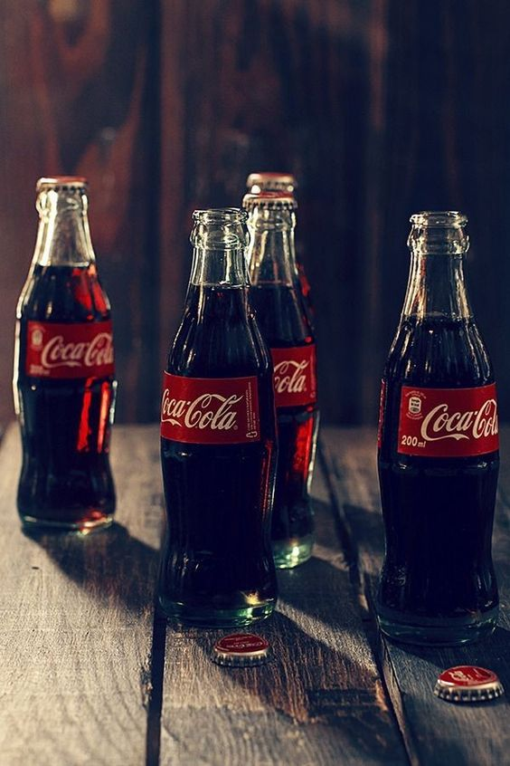

현대 대중문화의 아이콘, 코카-콜라 병의 100여 년 역사
1915년 처음 탄생한 코카-콜라 병은 이제 100세를 훌쩍 넘긴 나이가 되었지만,
특유의 독창적인 디자인으로 단순한 음료수 병을 넘어 예술, 음악, 광고에 영감을 주며 대중문화의 아이콘이 되어왔다.
팝 아트의 선구자 앤디 워홀(Andy Warhol)이 그의 그림에 코카-콜라 병을 그려 넣었고,
폭스바겐은 자동차 비틀(Beetle)의 디자인을 매력적으로 어필하기 위해 코카-콜라 병을 광고에 활용하기도 했다.
전 세계 남녀노소를 불문하고 누구나 알아보는 코카-콜라 병. 그 시작은 뜻밖에도 경쟁업체의 모방으로부터 브랜드를 보호하기 위해 시작됐다.
누구도 따라 할 수 없는 독창적인 병을 디자인하라!
.webp)
1886년 코카-콜라는 하루 평균 9잔 판매됐지만, 1900년에 이르러서는 미국의 거의 모든 주에서 판매될 만큼 크게 성장했다.
코카-콜라는 폭발적인 인기에 힘입어 미국 전역에 코카-콜라 병을 제조할 수 있는 독점 판매권을 주는 방식으로 사업을 확장했다.
코카-콜라가 원액을 주면, 보틀링 파트너가 직접 제작한 병에 원액을 넣어 판매하는 프랜차이즈 방식이었다.
1920년 즈음엔 1,200개가 넘는 보틀링 파트너가 생겨났고, 코카-콜라 판매량도 계속해서 증가했다.
하지만 코카-콜라의 높은 인기와 성장에 시기를 느낀 경쟁업체들이 코카-콜라의 유사품을 만들기 시작했다.
당시 병은 단순한 직선 형태라 모방도 어렵지 않았다.
이를 막으려고 코카-콜라 병에 로고를 새겼지만 그것마저 똑같이 따라 했다. 코카-놀라(Koka-Nola),
마 코카-코(Ma Coca-Co), 토카-콜라(Toka-Cola), 심지어 아주 교묘하게 스펠링만 살짝 바꾼 코크(Koke)까지…
컬러풀한 상표가 표기된 다이아몬드 모양의 라벨을 병에 부착했지만 이 또한 소용이 없었다.
소송도 해보았지만 결국 피해는 고스란히 코카-콜라가 떠안아야 했다.
코코아 열매와 조지아 주의 푸른 숲을 모티브로
공모전에 우승한 팀은 미국 인디애나 주에 위치한 루트 유리공장(The Root Glass Company)의
디자이너였던 알렉산더 사무엘슨(Alexander Samuelson)과 얼 딘(Earl Dean) 등 5명의 직원들이었다.
이들은 도서관에서 자료조사를 하다 우연히 발견한 ‘코코아 열매’를 모티브로
코코아 열매의 길게 늘어진 볼록한 곡선 모양과 겉면의 흐르는 듯한 세로 선을 디자인에 표현했다.
.webp)
1915년 11월 16일 코카-콜라 병은 디자인 특허를 받았고, 이듬해 1916년에는 코카-콜라의 공식 디자인 병으로 지정되었다.
엷은 녹색의 독특한 병 색깔은 숲이 많고 푸르른 코카-콜라의 고향, 조지아 주에 대한 존경심을 담아 ‘조지아 그린(Georgia Green)’이라 이름 붙였다.
코카-콜라 디자인과 제작 방식은 수십 년에 걸쳐 소비자들에게 즐거움을 선사했다.
당시 코카-콜라 병 바닥에는 병을 주문한 도시의 이름이 새겨졌는데, 아이들은 누구의 병이 더 멀리서 온 것인지 앞다투어 비교하곤 했다.
하지만 이러한 인기에도 불구하고 비용 부담 때문에 쉽게 바꾸지 못하다가, 1920년 즈음에
이르러서야 대다수 보틀링 파트너들이 공식 디자인으로 지정된 코카-콜라 병을 생산하게 된다.
코카-콜라는 병 디자인에 대한 독점적 지위를 유지하기 위해 지속적으로 특허권도 갱신했다.
특히 모든 특허가 만료되는 1951년 이후를 대비하기 위해 특허청에 상표권으로 보호해달라는 요청을 제출했다.
이제 코카-콜라 병의 독창적인 곡선과 디자인은 그 자체로 코카-콜라를 상징하기 때문이었다.
실제 당시 한 조사에 따르면 코카-콜라 병 모양을 구분하지 못하는 미국인은 1%도 되지 않는 것으로 나타났다.
덕분에 코카-콜라 병은 1961년, 상업용 포장 용기로는 드물게 특유의 독창성을 인정받아 상표로서 공식적인 보호를 받게 되었다.